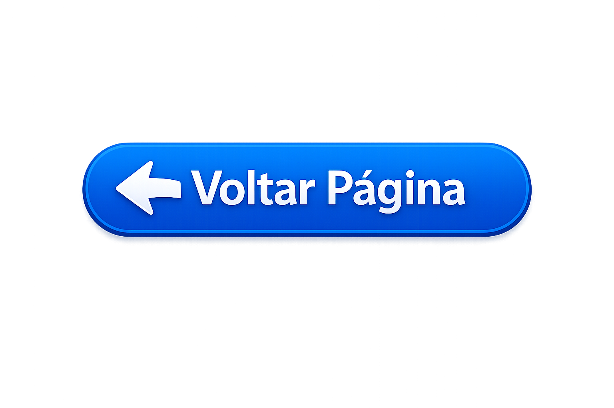

A União das Associações Europeias de Futebol (em inglês: Union of European Football Associations), mais conhecida pelo acrônimo UEFA, é uma instituição de futebol filiada da FIFA.Representando as federações nacionais da Europa, organiza nove competições entre nações e quatro entre clubes do continente. Além disso, controla a recompensação, regulamentos e direitos de mídia para essas competições. É uma das seis federações continentais da FIFA.
A UEFA foi fundada a 15 de Junho de 1954 em Basileia, na Suíça como consequência de discussões entre as federações da França, Itália e Bélgica. A sede ficou instalada em Paris até 1959, ano em que acabou por mudar-se para a capital suíça Berna. Henri Delaunay foi o primeiro Secretário-Geral e Ebbe Shwartz o presidente. O seu centro administrativo desde 1995 é em Nyon, Suíça. Era inicialmente composta por 25 federações; atualmente são 55. A Liga dos Campeões é o seu torneio de clubes mais importante
